Панель управления
Панель просмотра данных шины
Панель просмотра данных предназначена для отображения значений топиков в режиме реального времени.
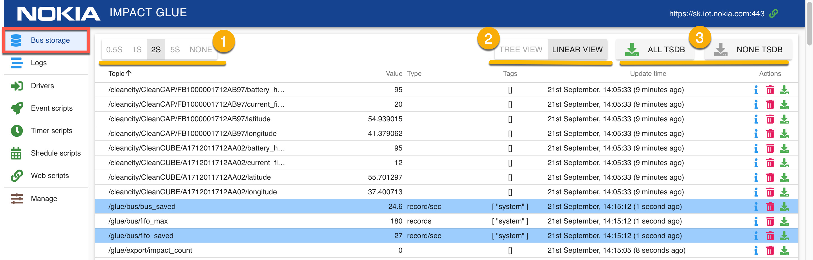
В верхней части панели расположены элементы управления:
- Переключатель частоты обновления данных в панели. Данные, поступающие в шину обновляются в веб-панели с интервалом, заданным пользователем (от 0.5 до 5 сек). Существует и возможность приостановить обновление данных ("NONE").
- Переключатель между линейным и древовидным режимами отображения.
- Переключатель экспорта данных всех топиков.
Линейный и древовидный режим отображения
Данные могут быть представлены в виде списка или древовидной иерархии, генерируемой на основе названия топика.
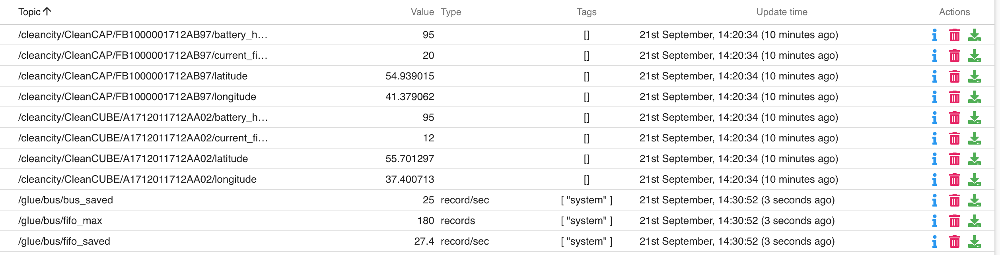
При линейном виде ("Linear View"), данные отображаются в виде таблицы.
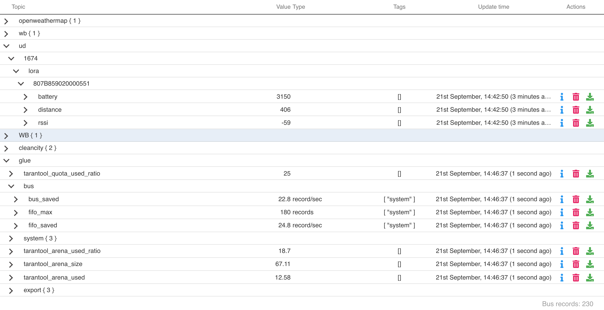
При древовидном режиме отображения, данные группируются по составляющим названия топика, разделенным символом "/".
/cleancity/CleanCAP/FB1000001712AB97/battery_health
/cleancity/CleanCAP/FB1000001712AB97/current_fill_level
К примеру, эти два топика будут сгруппированы и получится такая древовидная структура:
cleancity+
+->CleanCAP+
+->FB1000001712AB97+
+->battery_health
+->current_fill_level
В обоих режимах отображения, у топика доступны следующие поля:
- Topic - название топика
- Value - последнее полученное с шины значение топика
- Type - тип поступающих данных (формат, единица измерения и т.п.)
- Tags - теги топика
- Update Time - время последнего обновления топика
- Actions - действия, которые можно совершать с топиком (открыть окно редактирования данных топика, удалить топик, включить/выключить экспорт)
Окно подробной информации о топике
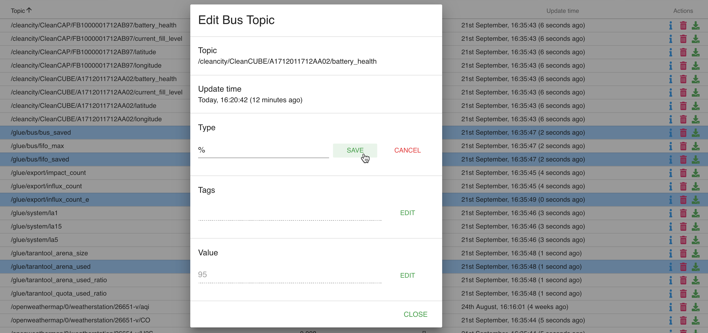
В этом окне можно изменить данные топика (тип Type, теги Tags, значение Value), храняшиеся в шине.
После ввода данных в поле нажмите Save и данные будут отправлены на шину.
Панель просмотра логов
Логи - информация (в основном - диагностическая), поступающая от драйверов и скриптов Glue.
Логи представленны в виде таблицы, где каждая запись содержит:
- Level - тип записи. Могут быть - INFO, WARNING, ERROR, USER
- Source - драйвер или скрипт, создавшие запись.
- Date - дата создания записи (относительная или абсолютная, переключается нажатием на заголовок столбца)
- Entry - содержимое записи в текстовом виде.
- Info - кнопка для открытия модального окна с полной информацией и событии.
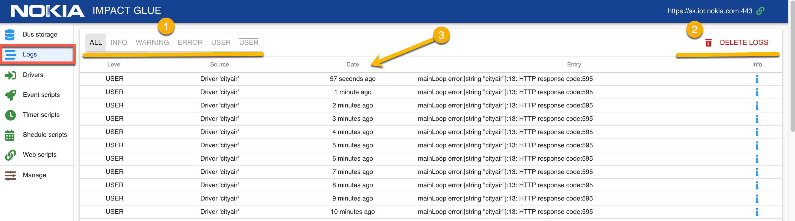
В верхней части страницы присутствуют следующие элементы управления:
- Переключатель типа записей (Level).
- Кнопка, удаляющая все логи.
- По нажатию на заголовки таблицы, можно переключаться между абсолютным и относительным отображением даты.
Интерфейс скриптов
Скрипты — это обособленные части кода, которые реализуют прикладную логику: расчет, изменение, реакции, выдача данных.
Скрипты бывают нескольких видов:
- Драйвера (Drivers)
- Event-cкрипты (Event scripts)
- Timer-cкрипты (Timer scripts)
- Schedule-cкрипты (Schedule scripts)
- Webevent-cкрипты (Web scripts)
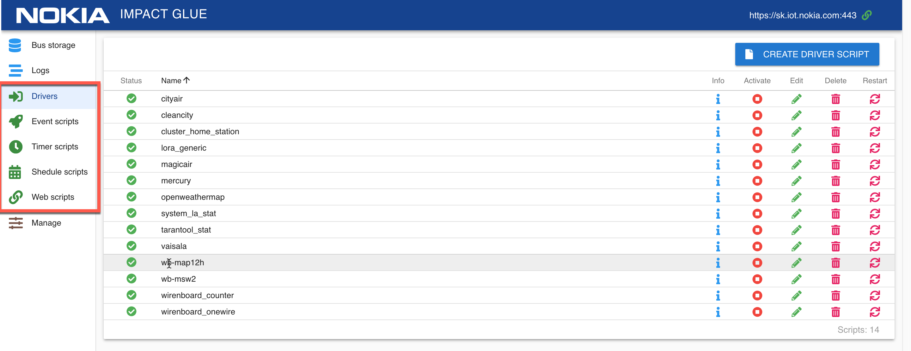
Подробную информацию о разработке драйверов и скриптов можно получить в руководстве для разработчиков.
Драйвера
Драйвера - это скрипты, предназначенные для получения данных с различных устройств и отправке их в обработанном виде на шину.
Список драйверов представлен в виде таблицы. Для каждого драйвера доступны поля:
- Status - текущее состояние драйвера (возможные варианты - запущен, неактивен, предупреждение)
- Name - название драйвера
- Info - открыть модальное окно с подробной информацией о драйвере
- Activate - активировать/деактивировать драйвер
- Edit - редактировать драйвер
- Delete - удалить драйвер
- Restart - перезапустить драйвер
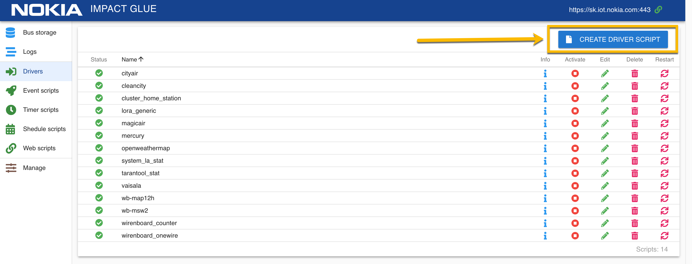
Для создания нового драйвера, нажмите на кнопку "Create Driver Script", введите в открывшемся модальном окне название драйвера и нажмите кнопку "Create".
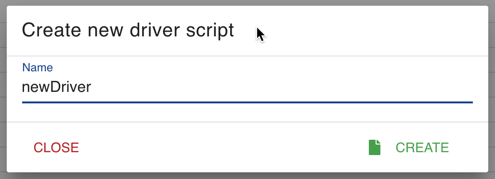
В результате этой операции, в списке драйверов появится новый драйвер со статусом "неактивен". Теперь, можно написать код нашего драйвера и запустить его.
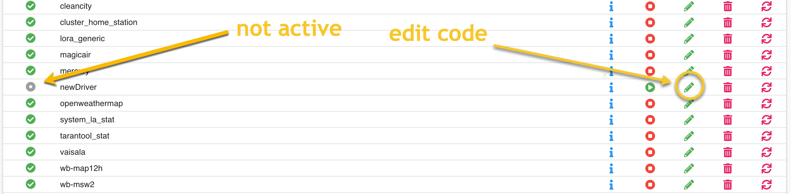
На странице редактирования драйвера расположены:
- BACK переход обратно к списку драйверов
- ACTIVATE - активировать/деактивировать текущий драйвер
- SAVE - сохранить текущий драйвер
- SAVE AND RESTART - сохранить текущий драйвер и перезапустить его
- HIDE LOGS - скрыть логи драйвера в нижней части страницы
- Стрелки вниз/вверх для увеличения/уменьшения размера области с логами драйвера
- HELP - открыть модальное окно со списком доступных переменных и функций
- Область для редактирования кода скрипта.
- Область отображения логов данного скрипта.
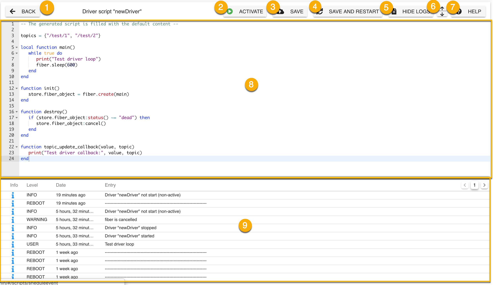
Обратите внимание!
Для запуска скрипта или драйвера, его нужно сначала активировать. При активации, будет предпринята попытка автоматического запуска скрипта. Если нажимать "Save And Restart" для неактивированного скрипта, то он будет только сохранен, но не запущен.
Скрипт, находящийся в активном состоянии, Glue будет пытаться включить непосредственно в момент активации и каждый раз при перезапуске. Скрипт можно принудительно перезапустить, если это необходимо.
Неактивные скрипты никак не участвуют в работе системы до момента их активации.
При разрабоке драйверов или скриптов, часто бывает нужно получить информацию о значении каких-либо переменных, например вывести полученные данные от устройства.
Это можно сделать, используя систему логов непоредственно на странице редактирования скрипта.
По нажатию на кнопку "i" около события в списке логов можно получить информацию, необходимую для отладки скрипта.
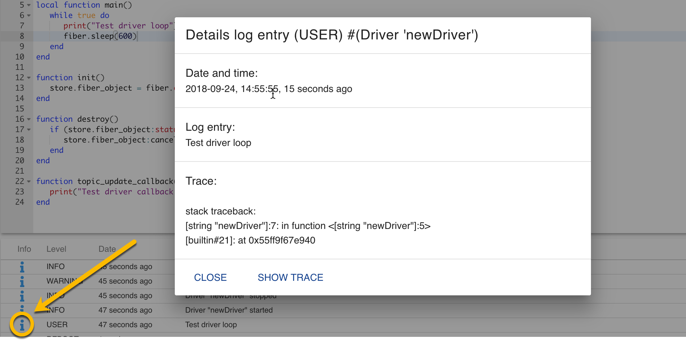
Event-cкрипты
Скрипты, которые запускаются при возникновении определенных условий.
Event-скрипты предназначены для отслеживания событий, происходящих на шине и реакции на эти изменения.
С помощью них можно, например:
- создать оповещения о превышении предельных значений на объектах мониторинга
- расчитывать приращение наблюдаемой величны (скорость изменения) и записывать его в отдельный топик
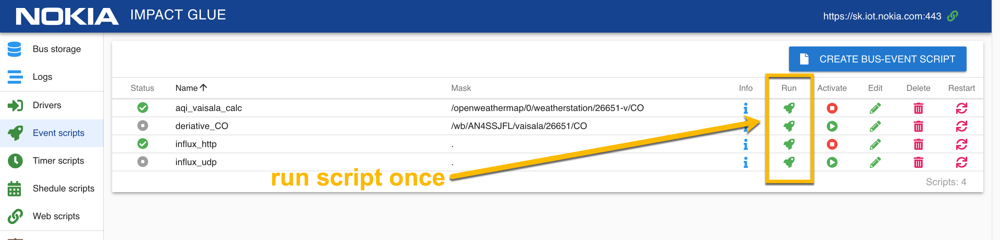
Внешний види списка Event скриптов в целом аналогичен списку драйверов, за исключением:
- у Event скриптов есть поле Mask, определяющее список топиков, которые скрипт отслеживает
- Event скрипты можно запускать однократно (есть поле "Run Once")
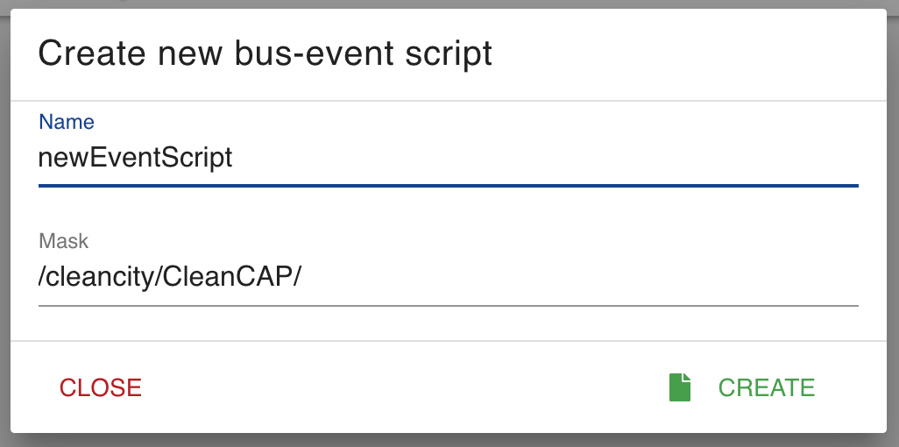
При создании Event скрипта нужно указать не только его название, но и маску.
Маска определяет количество топиков, изменения которых будет прослушивать скрипт.
К примеру, указанная на картинке маска будет прослушивать все топики, начинающиеся на /cleancity/CleanCap/:
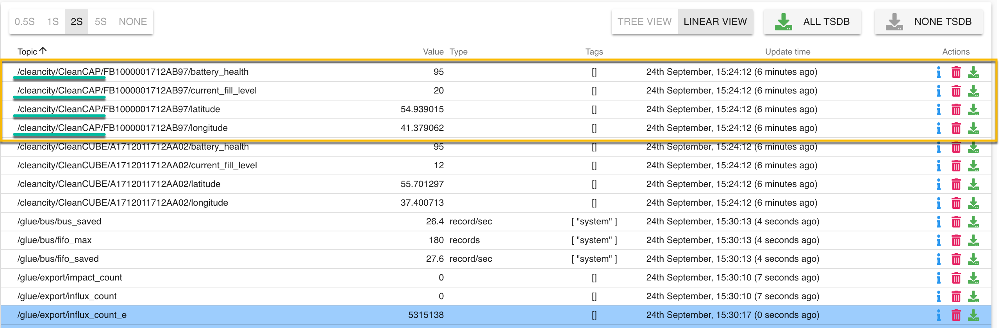
При нажатии на кнопку Info у Event-скрипта, можно не только получить подробную информацию о нем, но и изменить маску прослушиваемых топиков:
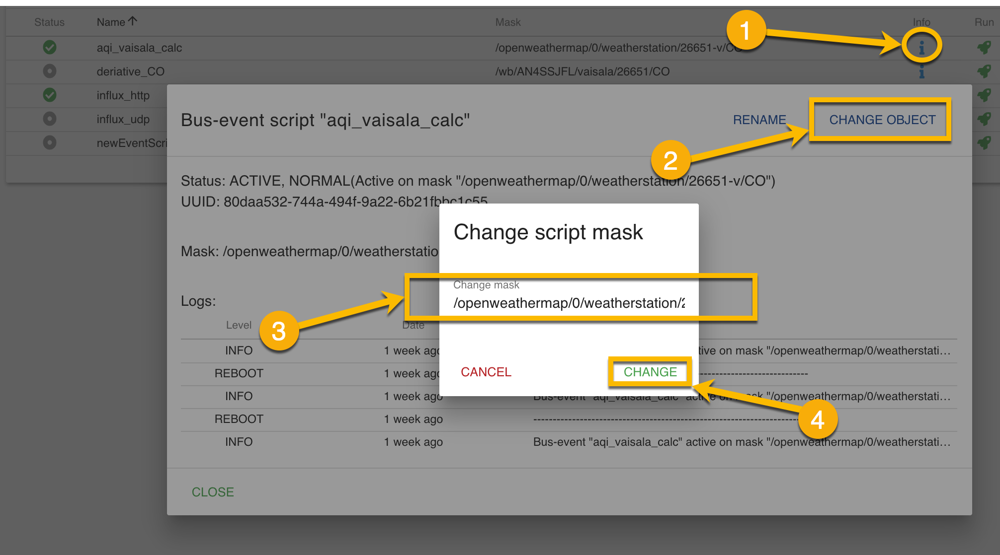
На странице редактирования Event-скрипта доступен тот-же функционал, что и на странице редактирования кода драйвера, но также есть возможность редактирования маски прослушиваемых топиков.
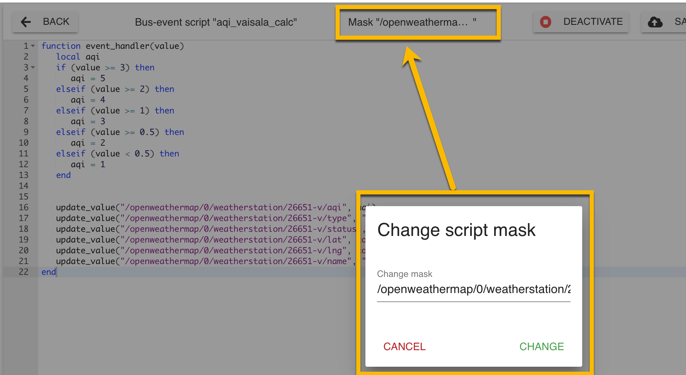
Timer-cкрипты
Скрипты, которые запускаются с определенным интервалом. При создании Timer-скрипта, нужно ввести интервал в секундах (Period) , с которым он будет запускаться. Интервал отображается в поле Period в списке Timer-скриптов.
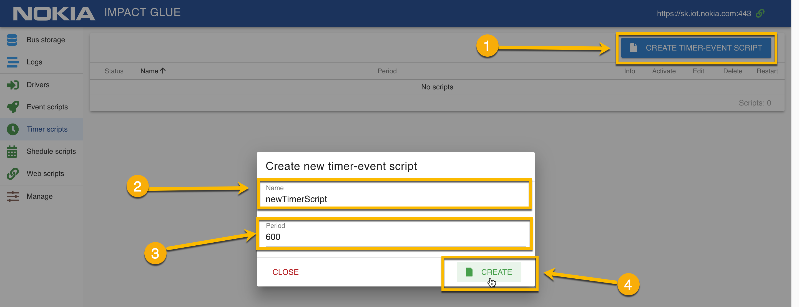
Создание и редактирование кода Timer-скрипта аналогично созданию кода драйвера или Event-скрипта.
Shedule-cкрипты
Скрипты, которые запускаются по расписанию.
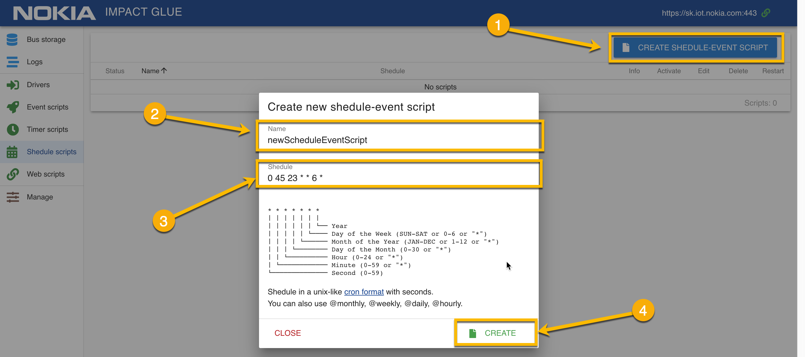
Для создания Schedule-скрипта:
- нажмите кнопку "Create Shedule-Event Script"
- введите имя скрипта
- введите расписание скрипта в формате crontab
- нажмите кнопку "Create"
В показанном на скриншоте примере, расписание, скрипт будет выполнен каждую субботу в 23:45.
0 45 23 * * 6 *
│ │ │ │ │ │ │
│ │ │ │ │ │ └── Каждый год
│ │ │ │ │ └──── По субботам
│ │ │ │ └────── Каждый месяц
│ │ │ └──────── Каждый день месяца
│ │ └─────────── В 23 часа
│ └────────────── В 45 минут
└──────────────── В 0 секунд
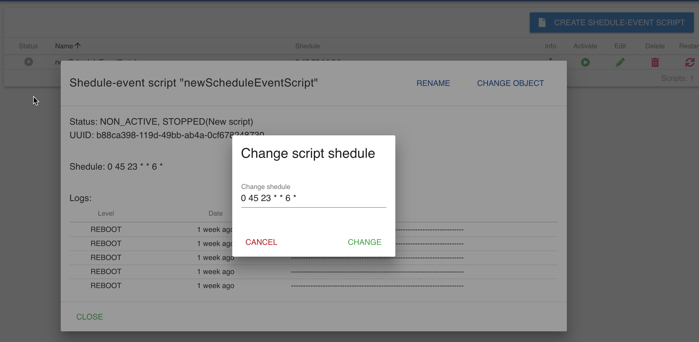
Изменить расписание Schedule скрипта можно в окне с подробной информацией о скрипте и на странице редактирования скрипта (в верхней части).
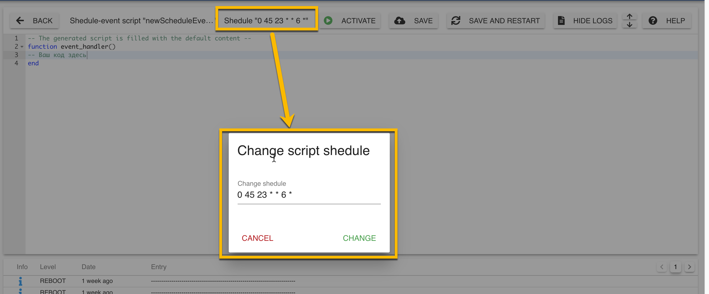
Webevent-cкрипты
Webevent запускаются при HTTP запросе на определенный URL, который формируется из URL инстанса Glue и endpoint, задаваемым пользователем при создании скрипта.
С помощью Webevent-скриптов можно:
- создать API, которое будет предоставлять внешним клиентам данные с шины в формате XML, JSON или любом другом.
- принимать управляющие воздействия от взаимодействующих с Glue внешних систем через HTTP запросы
- создавать несложные web-страницы для user-friendly отображения данных шины для нетехнических пользователей
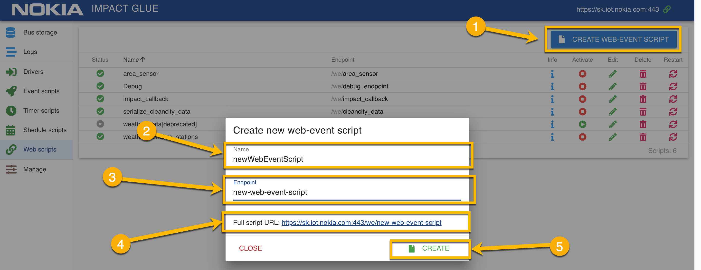
Для создания нового Webevent-скрипта:
- Нажмите кнопку "Create Web-Event Script"
- Введите название скрипта
- Введите желаемый endpoint скрипта
- Проверьте результирующий URL, который будет использоваться для вызова скрипта
- Нажмите кнопку "Create"
Изменить endpoint можно как в редакторе кода скрипта, так и в окне подробной информации о скрипте.
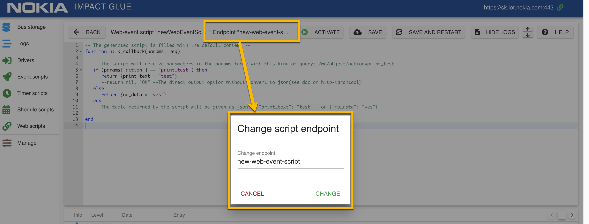
Процесс написания кода как Webevent-скриптов, так и других типов скриптов подробно рассмотрен в руководстве для разработчиков
Панель управления системой
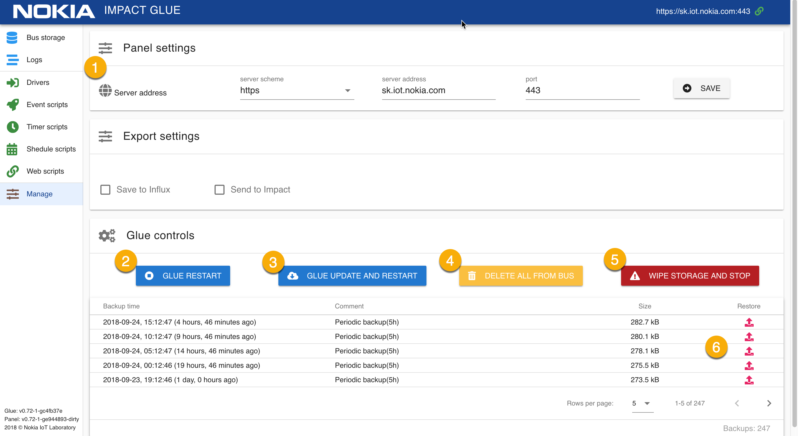
В панели управления системой (вкладка Manage) можно:
- выбрать сервер, с которым будет работать панель
- перезапустить сервис Glue
- перезапустить Glue с обновлением (выполняется git reset --hard, будут перезаписаны все изменения в коде Glue! )
- удалить все данные из центральной шины
- очистить все хранилище данных
- восстановить Glue из бэкапа
Раздел настройки адреса сервера
Панель управления Glue является независимым фронтендом к системе Glue и может быть запущена в любом месте, даже локально.
Связь с Glue происходит по HTTP(S) протоколу.
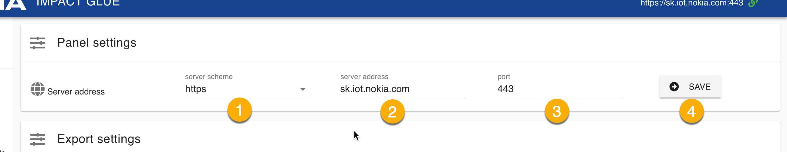
Для настройки адреса сервера Glue:
- Выберите протокол - http или https
- Укажите адрес сервера без http или https
- Укажите порт, который прослушивает сервер Glue
- Нажмите "Save"
Система восстановления из бекапа
Glue производит периодический бэкап системы каждые 5 часов. Происходит бэкап:
- настроек glue
- состояния шины
- логов
- драйверов и их статусов
В любой момент, вы можете откатиться до любого из доступных бэкапов.
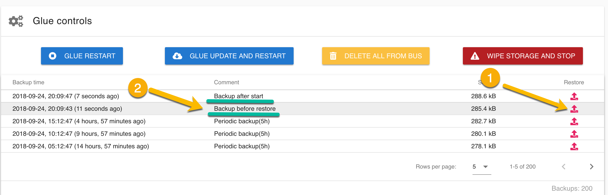
Для восстановления из бэкапа, выберите точку восстановления из списка и нажмите кнопку "Restore" (1).
После восстановления из бэкапа, будут созданы еще 2 точки восстановления - "Backup before restore" и "Backup after start". (2)
"Backup before restore" - это бэкап системы, которая была до загрузки данных из выбранной точки восстановления.
"Backup after start" - бэкап системы после загрузки данных из точки восстановления.
Такой подход позволяет гарантировать отсутствие риска потери данных при восстановлении из бэкапов.